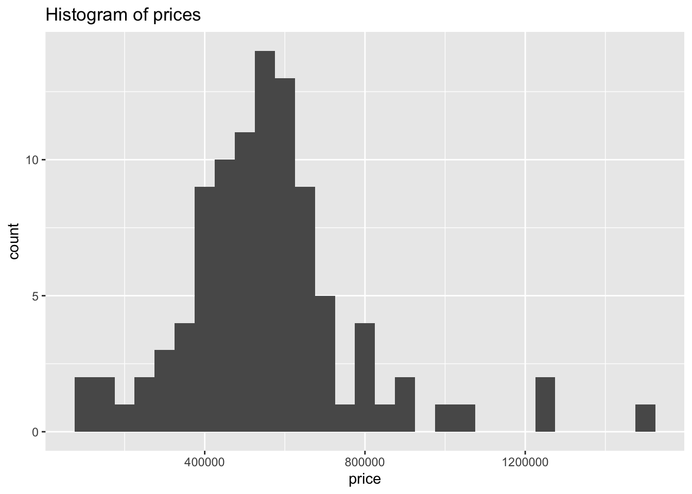
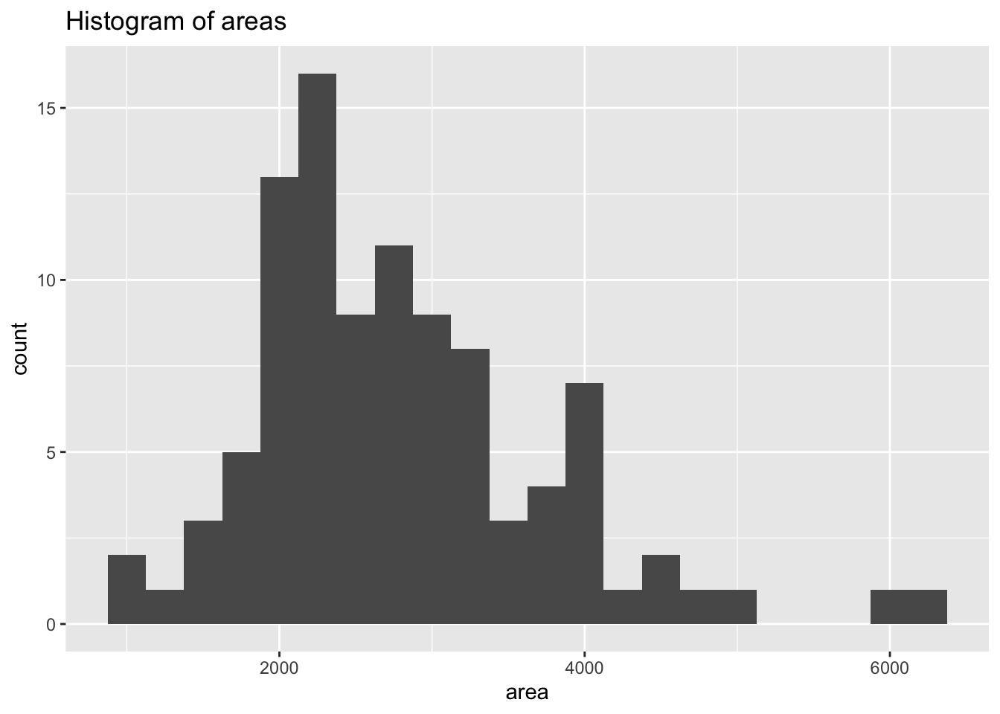

Housing Prices
To renderin pdf: quarto install tool tinytex On termninal tinytex::install_tinytex() On console
1 Introduction
In this analysis, we build a model predicting sale prices of houses based on data on houses that were sold in the Duke Forest neighborhood of Durham, NC around November 2020. Let’s start by loading the packages we’ll use for the analysis.
We present the results of exploratory data analysis in Section 2 and the regression model in Section 3.
2 Exploratory data analysis
The data contains 98 houses. As part of the exploratory analysis let’s visualize and summarize the relationship between areas and prices of these houses.
2.1 Data visualization
Figure 1 shows two histograms displaying the distributions of price and area individually.
Code

prices
areasFigure 2 displays the relationship between these two variables in a scatterplot.
2.2 Summary statistics
Table 1 displays basic summary statistics for these two variables.
Code
| Median price | IQR price | Median area | IQR area | Correlation, r |
|---|---|---|---|---|
| 540000 | 193125 | 2623 | 1121 | 0.67 |
3 Modeling
Vou inserir uma citação aqui (Hespanhol et al. 2019). Assim como outra referência aqui (Lopes et al. 2012). Mais uma outra aqui (Hespanhol et al. 2021)
We can fit a simple linear regression model of the form shown in Equation 1.
price = \hat{\beta}_0 + \hat{\beta}_1 \times area + \epsilon \tag{1}
Table 2 shows the regression output for this model.
4 Modos de usar cross-ref
section Section 3
Figure Figure 1
Table Table 2
Equation Equation 1
This is a pretty incomplete analysis, but hopefully the document provides a good overview of some of the authoring features of Quarto!
This is a pretty incomplete analysis, but hopefully the document provides a good overview of some of the authoring features of Quarto!
This is a pretty incomplete analysis, but hopefully the document provides a good overview of some of the authoring features of Quarto!
This is a pretty incomplete analysis, but hopefully the document provides a good overview of some of the authoring features of Quarto!
This is a pretty incomplete analysis, but hopefully the document provides a good overview of some of the authoring features of Quarto!